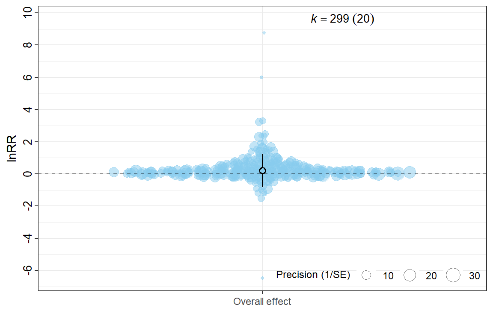

db <- readr::read_csv(here("..","data","db_lnRR.csv")) %>%
mutate(across(c(C_n, Ex_n, C_mean, Ex_mean, C_SE, Ex_SE, C_SD, Ex_SD,lnRR,lnRR_var), as.numeric))%>%
mutate(across(where(is.character), as.factor))Overall effect
After estimating effect sizes, we fit a multilevel, intercept-only meta-analytic model to estimate the overall mean effect of music exposure across all studies.
Because many studies contributed multiple, non-independent effect sizes (e.g., multiple outcomes measured within the same cohort), we use the rma.mv() function from the metafor package to account for hierarchical structure and sampling dependence.
Note
Variable definitions:
| Variable Name | Definition |
|---|---|
ES_ID |
Unique row identifier for each \(\text{lnRR}\) effect size. |
Study_ID |
Identifier for the primary research paper. |
Cohort_ID |
Identifier for specific experimental groups within a study (combination of Study_ID and Experiment_ID). |
Variance–covariance matrix
We construct a variance–covariance (VCV) matrix to model dependencies among effect sizes derived from the same experimental cohort.
When multiple outcomes are measured on the same animals, their sampling errors are correlated. Treating them as fully independent would underestimate standard errors and inflate precision. The VCV matrix explicitly incorporates this correlation structure.
We assume a within-cohort correlation of ρ = 0.5 when the true correlation is not reported. This value reflects a moderate level of dependence and is commonly used in ecological and behavioral meta-analyses when correlations are unknown.
VCV <- metafor::vcalc(
vi = lnRR_var,
cluster = Cohort_ID, # The clustering variable (Study_ID + Ex_ID)
obs = ES_ID, # The unique observation/effect size ID
rho = 0.5, # Assumed correlation between outcomes from the same cohort
data = db
)Multilevel intercept-only meta-analytic model
We fit an intercept-only multilevel meta-analysis to estimate the grand mean lnRR across all studies.
Random effects account for: - Study-level variation (Study_ID) - Within-study effect-size variation (ES_ID) - Strain-level variation (Strain)
This structure partitions heterogeneity across hierarchical levels while preserving appropriate uncertainty.
Note
Note that the VCV matrix models correlated sampling errors at the cohort level, whereas random effects model between-study and between-effect heterogeneity.
ma_all <- rma.mv(yi = lnRR,
V = VCV,
random = list(~1 | Study_ID,
~1 | Cohort_ID,
~1 | ES_ID,
~1 | Strain),
test = "t",
method = "REML",
sparse = TRUE,
data = db)
summary(ma_all)
Multivariate Meta-Analysis Model (k = 298; method: REML)
logLik Deviance AIC BIC AICc
-237.5721 475.1442 485.1442 503.6129 485.3504
Variance Components:
estim sqrt nlvls fixed factor
sigma^2.1 0.0278 0.1668 20 no Study_ID
sigma^2.2 0.0278 0.1668 20 no Cohort_ID
sigma^2.3 0.1963 0.4431 298 no ES_ID
sigma^2.4 0.0000 0.0000 6 no Strain
Test for Heterogeneity:
Q(df = 297) = 5916.7414, p-val < .0001
Model Results:
estimate se tval df pval ci.lb ci.ub
-0.1872 0.0660 -2.8344 297 0.0049 -0.3172 -0.0572 **
---
Signif. codes: 0 '***' 0.001 '**' 0.01 '*' 0.05 '.' 0.1 ' ' 1We extract multilevel \(I^2\) statistics to quantify the proportion of total variance attributable to heterogeneity at each random-effect level (rather than sampling error alone).
orchaRd::i2_ml(ma_all) I2_Total I2_Study_ID I2_Cohort_ID I2_ES_ID I2_Strain
9.832916e+01 1.086160e+01 1.086160e+01 7.660596e+01 5.246250e-07 Model simplification
Variance partitioning indicated that Cohort_ID accounted for negligible additional heterogeneity beyond the VCV structure and other random effects. We therefore refit a more parsimonious model excluding Cohort_ID to evaluate whether model fit materially changed.
ma_all <- rma.mv(yi = lnRR,
V = VCV,
random = list(~1 | Study_ID,
~1 | ES_ID,
~1 | Strain),
test = "t",
method = "REML",
sparse = TRUE,
data = db)
summary(ma_all)
Multivariate Meta-Analysis Model (k = 298; method: REML)
logLik Deviance AIC BIC AICc
-237.5721 475.1442 483.1442 497.9192 483.2812
Variance Components:
estim sqrt nlvls fixed factor
sigma^2.1 0.0557 0.2359 20 no Study_ID
sigma^2.2 0.1963 0.4431 298 no ES_ID
sigma^2.3 0.0000 0.0000 6 no Strain
Test for Heterogeneity:
Q(df = 297) = 5916.7414, p-val < .0001
Model Results:
estimate se tval df pval ci.lb ci.ub
-0.1872 0.0660 -2.8344 297 0.0049 -0.3172 -0.0572 **
---
Signif. codes: 0 '***' 0.001 '**' 0.01 '*' 0.05 '.' 0.1 ' ' 1orchaRd::i2_ml(ma_all) I2_Total I2_Study_ID I2_ES_ID I2_Strain
9.832916e+01 2.172321e+01 7.660594e+01 6.896976e-07 The simplified model produced nearly identical parameter estimates and heterogeneity components, supporting the use of the more parsimonious structure.
Visualization of the overall effect
We visualize the pooled lnRR estimate using an orchard plot. The plot displays:
- The pooled mean effect
- Its 95% confidence interval
- Study-level effect sizes
- Prediction interval (if included)
Negative values indicate reductions in anxiety- or depression-like behavior.
overall_lnRR<-orchard_plot(ma_all,
group = "Study_ID",
xlab = "lnRR",
flip=T) +
scale_x_discrete(labels = "Overall effect") +
scale_y_continuous(breaks = seq(-8, 10, by = 2),
minor_breaks = seq(-8, 10, by = 1 ))
overall_lnRR
Note
sessionInfo()R version 4.5.2 (2025-10-31 ucrt)
Platform: x86_64-w64-mingw32/x64
Running under: Windows 11 x64 (build 26200)
Matrix products: default
LAPACK version 3.12.1
locale:
[1] LC_COLLATE=English_Guernsey.utf8 LC_CTYPE=English_Guernsey.utf8
[3] LC_MONETARY=English_Guernsey.utf8 LC_NUMERIC=C
[5] LC_TIME=English_Guernsey.utf8
time zone: America/Edmonton
tzcode source: internal
attached base packages:
[1] stats graphics grDevices utils datasets methods base
other attached packages:
[1] orchaRd_2.1.3 metafor_4.8-0 numDeriv_2016.8-1.1
[4] metadat_1.4-0 Matrix_1.7-4 patchwork_1.3.2
[7] lubridate_1.9.4 forcats_1.0.1 stringr_1.6.0
[10] dplyr_1.1.4 purrr_1.2.1 readr_2.1.6
[13] tidyr_1.3.2 tibble_3.3.1 ggplot2_4.0.1
[16] tidyverse_2.0.0 knitr_1.51 here_1.0.2
[19] dtplyr_1.3.2 DT_0.34.0
loaded via a namespace (and not attached):
[1] beeswarm_0.4.0 gtable_0.3.6 xfun_0.56
[4] htmlwidgets_1.6.4 lattice_0.22-7 mathjaxr_2.0-0
[7] tzdb_0.5.0 vctrs_0.7.1 tools_4.5.2
[10] generics_0.1.4 parallel_4.5.2 sandwich_3.1-1
[13] pacman_0.5.1 pkgconfig_2.0.3 data.table_1.18.2.1
[16] RColorBrewer_1.1-3 S7_0.2.1 lifecycle_1.0.5
[19] compiler_4.5.2 farver_2.1.2 codetools_0.2-20
[22] vipor_0.4.7 htmltools_0.5.9 yaml_2.3.12
[25] pillar_1.11.1 crayon_1.5.3 MASS_7.3-65
[28] multcomp_1.4-29 nlme_3.1-168 tidyselect_1.2.1
[31] digest_0.6.39 mvtnorm_1.3-3 stringi_1.8.7
[34] labeling_0.4.3 splines_4.5.2 latex2exp_0.9.8
[37] rprojroot_2.1.1 fastmap_1.2.0 grid_4.5.2
[40] cli_3.6.5 magrittr_2.0.4 survival_3.8-6
[43] TH.data_1.1-5 withr_3.0.2 scales_1.4.0
[46] bit64_4.6.0-1 ggbeeswarm_0.7.3 timechange_0.3.0
[49] estimability_1.5.1 rmarkdown_2.30 emmeans_2.0.1
[52] bit_4.6.0 otel_0.2.0 zoo_1.8-15
[55] hms_1.1.4 coda_0.19-4.1 evaluate_1.0.5
[58] rlang_1.1.7 xtable_1.8-4 glue_1.8.0
[61] rstudioapi_0.18.0 vroom_1.7.0 jsonlite_2.0.0
[64] R6_2.6.1